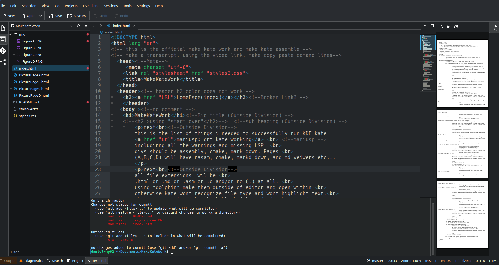
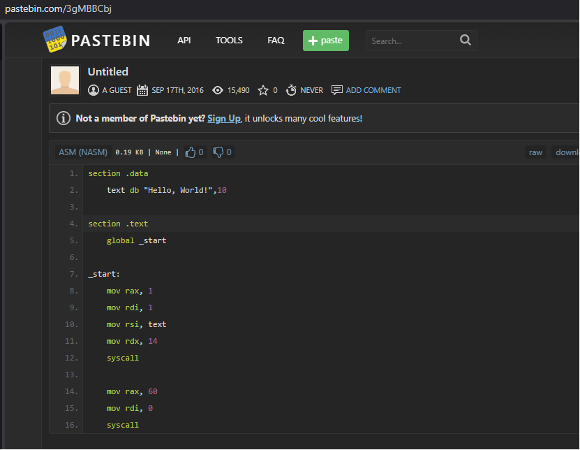

is what it sounds like.
KDE plasma is our prefered distro and kate is part of it
Our journey actually begins with the typical
"Make Samba Work"
but most tutorials seem to be in Nano
Following is the list of documents, tutorials, and videos
i needed to make kate work
meaning a lot learning command line, languges, and file types
meaning a lot of left menu "no LSP" warnings, no text highligt
"Make Git work"
We did get it all to work and will continue
using the GitHub remote to finish document
and make stuff cut/paste for after i forget
save tis tag for later
>

When it works: Kate,Git,LSP's
Just create all files in dolphin or comand line outside of editor
Then kate will simply recognize the file type and correctly highlight.
Most of the left menu is optional until one learns of and begins the
"GitHub relationship"
The RHS document veiwer happened when "Mark Down (README)" started appearing
more on that later

Pastebin assembnley
daniel@hp62:~$ nasm --version
Command 'nasm' not found, but can be installed with:
sudo apt install nasm
daniel@hp62:~$
daniel@hp62:~$ nasm --version
NASM version 2.16.01
daniel@hp62:~$
all files wil be .asm and .o and/or no (.) at all.
Per usual, make them outside of editor and open within
otherwise kate wont recognize file type and wont highlight text.
 c-make
c-make
daniel@hp62:~$ cmake --version
cmake version 3.30.5
CMake suite maintained and supported by Kitware (kitware.com/cmake).
daniel@hp62:~$
all files wil be CMakeLists.txt and .c
might be others, dont remember
make them outside of editor and open within
otherwise kate wont recognize file type and wont highlight text.
found at PastBin
all files wil be .asm and .o and/or no (.) at all.
Per usual, make them outside of editor and open within
otherwise kate wont recognize file type and wont highlight text.
 Mark Down
Mark Down
This Language seemed to insert it self
in line red color change
all files wil be .md .
Per usual, make them outside of editor and open within
otherwise kate wont recognize file type and wont highlight text.
not used